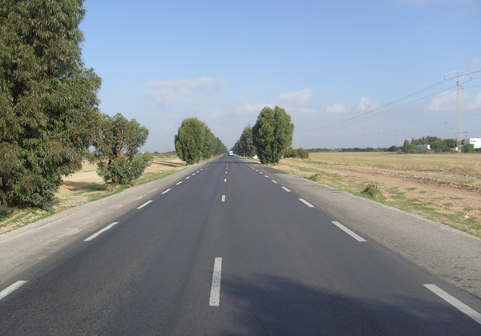
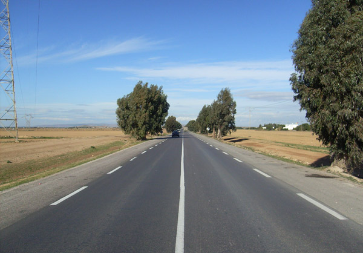
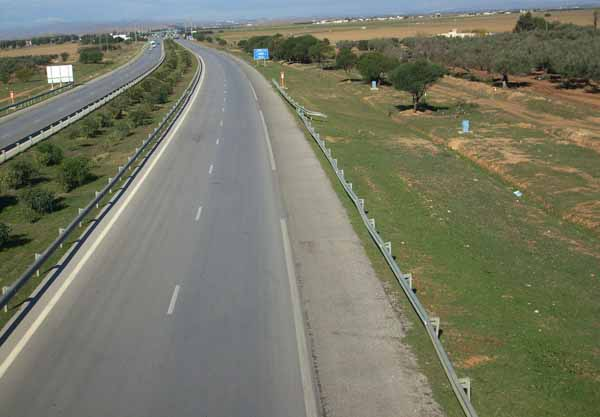
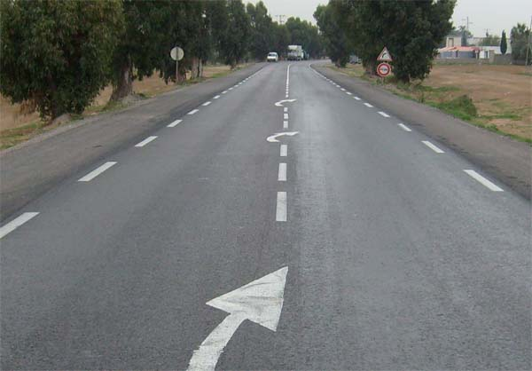
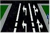
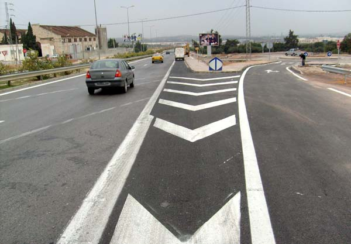
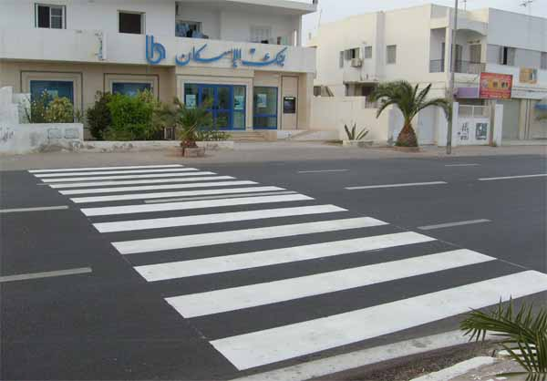

الهدف من هذا الباب هو التعرف على مختلف أنواع رسوم الطريق : فهي تنظم حركة المرور و تساعد على الاستعمال السليم للطريق مثل بقية الإشارات الضوئية والعمودية ويفرض وجودها على مستعملي الطريق التزامات معينة تحقيقا للسلامة المرورية.
تستعمل خاصة للإشارة إلى :
-مختلف أجزاء الطريق
-مسالك السير المراد إتباعها
-المسالك الخاصة ببعض مستعملي الطريق
ترسم الإشارات السطحية على المعبد باللون الأبيض ويستعمل في بعض الأحيان اللون الأصفر، أما حافة الرصيف فتدهن عادة باللون الأبيض أو الأحمر والأبيض أو الأصفر والأبيض.
الخط المتواصل
الخط المتواصل يعني منع اجتيازه من طرف كل سائق.
الخطوط المحورية أو المحددة للسبل

تحدد هذه الخطوط المسالك : يساوي طولها حوالي ثلث المسافة بينها. لايمكن اجتيازها إلا عند المجاوزة أو الدوران الى اليسار أو الرجوع على الأعقاب .
خطوط حافة المعبد

يقع تحديد حافتي المعبد بخطوط متقطعة : يساوي طول هذه الخطوط المسافة بينها تقريبا.
جوانب الوقوف الاضطراري بالطريق السيارة

يقع تحديد جوانب الوقوف الاضطراري بالطريق السيارة بخطوط متقطعة : يساوي طول الخطوط ثلاث مرات المسافة بينها تقريبا( المدهون 20 متر والفراغ 6 متر).
خطوط الإعلان عن خط متواصل
تعلن هذه الخطوط عن الاقتراب من الخط المتواصل . وحتى يمكن للسائق القيام بعملية المجاوزة يجب أن يتأكد من إمكانية القيام بها قبل بلوغ الخط المتواصل.
إذا كان الطريق مقسما إلى سبيل محدد بخط متقطع يحاذيه خط متواصل فلا يجوز للسائق أن لا يأخذ في الاعتبار إلا الخط الموجود بجانبه .
أسهم الانزواء

تسمى أسهم التنبيه وتكون موجهة نحو اليمين : ترسم بين الخطوط المتقطعة للتنبيه عن تحول الخط المتقطع إلى خط متواصل.
*إذا بدأ السائق في القيام بعملية المجاوزة وهو عند مستوى أسهم الانزواء فعليه إتمامها قبل الوصول إلى الخط المتواصل.
أسهم الاتجاه أو الاختيار

ترشد مستعملي الطريق إلى المسلك أو السبيل المراد إتباعه: ففي صورة الانعطاف إلى اليمين أختار المسلك الذي يحتوي على السهم الموجه نحو اليمين.
الخطوط المنكسرة

هي خطوط متوازية أو منحنية ذات لون أبيض : يمنع الجولان والوقوف والتوقف عليها .
ممرات المترجلين

هي خطوط عرضية موازية لمحور المعبد: عند الاقتراب من هذه الممرات يجب على السائق التخفيض من السرعة والتوقف عند الاقتضاء لفسح المجال للمترجلين المتوغلين.
=>يمنع الوقوف و التوقف على هذه الممرات .